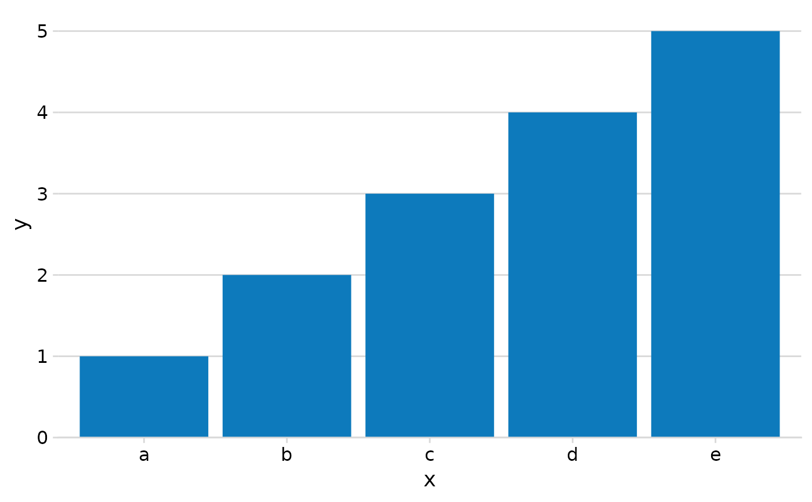

Mengen visualisieren. plot_amounts_* Familie.
Verwendung
plot_amounts_vertical(data, x, y, color = "#0d7abc")
plot_amounts_horizontal(data, x, y, color = "#0d7abc")
plot_amounts_grouped(data, x, y, group)
plot_amounts_facets(data, x, y, facet, n_col = 2, color = "#0d7abc")
plot_amounts_stacked(data, x, y, group)Argumente
- data
Ein Tibble mit den Daten für den Plot.
- x
Die Variable für die x-Achse.
- y
Die Variable für die y-Achse.
- color
Farbe der Balken. Default = #0d7abc.
- group
Gruppierungsvariable für einen einzelnen Plot.
- facet
Gruppierungsvariable um mehrere Plots zu machen (Facetten).
- n_col
Anzahl Spalten bei den Facetten. Default = 2.
Beispiele
df <- tibble::tibble(
x = c("a", "b", "c", "d", "e"),
y = 1:5
)
plot_amounts_vertical(df, x, y)

socviz::gss_lon |>
dplyr::count(age, degree) |>
plot_amounts_facets(x = age, y = n, facet = degree)
#> Error in loadNamespace(x): es gibt kein Paket namens ‘socviz’
socviz::gss_lon |>
dplyr::count(sex, degree) |>
plot_amounts_stacked(x = degree, y = n, group = sex)
#> Error in loadNamespace(x): es gibt kein Paket namens ‘socviz’
socviz::gss_lon |>
dplyr::count(sex, degree) |>
plot_amounts_grouped(x = sex, y = n, group = degree) +
colorspace::scale_fill_discrete_sequential(palette = "Purples 2")
#> Error in loadNamespace(x): es gibt kein Paket namens ‘socviz’